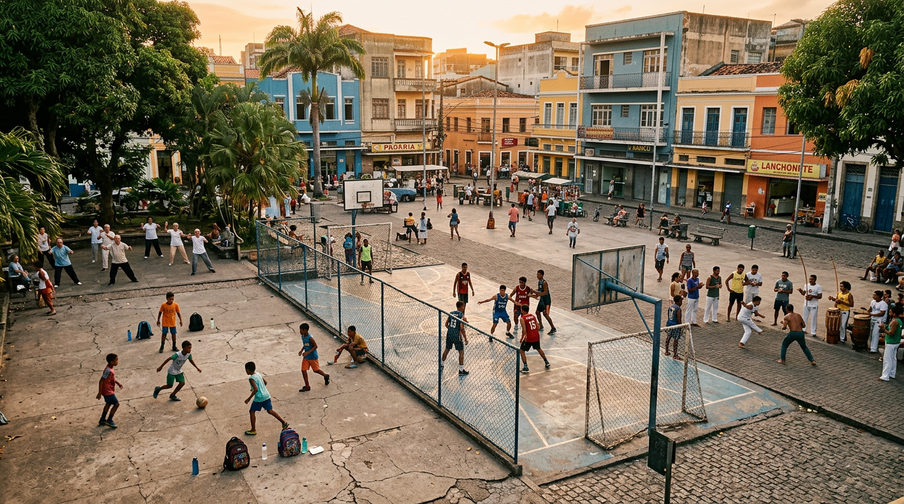
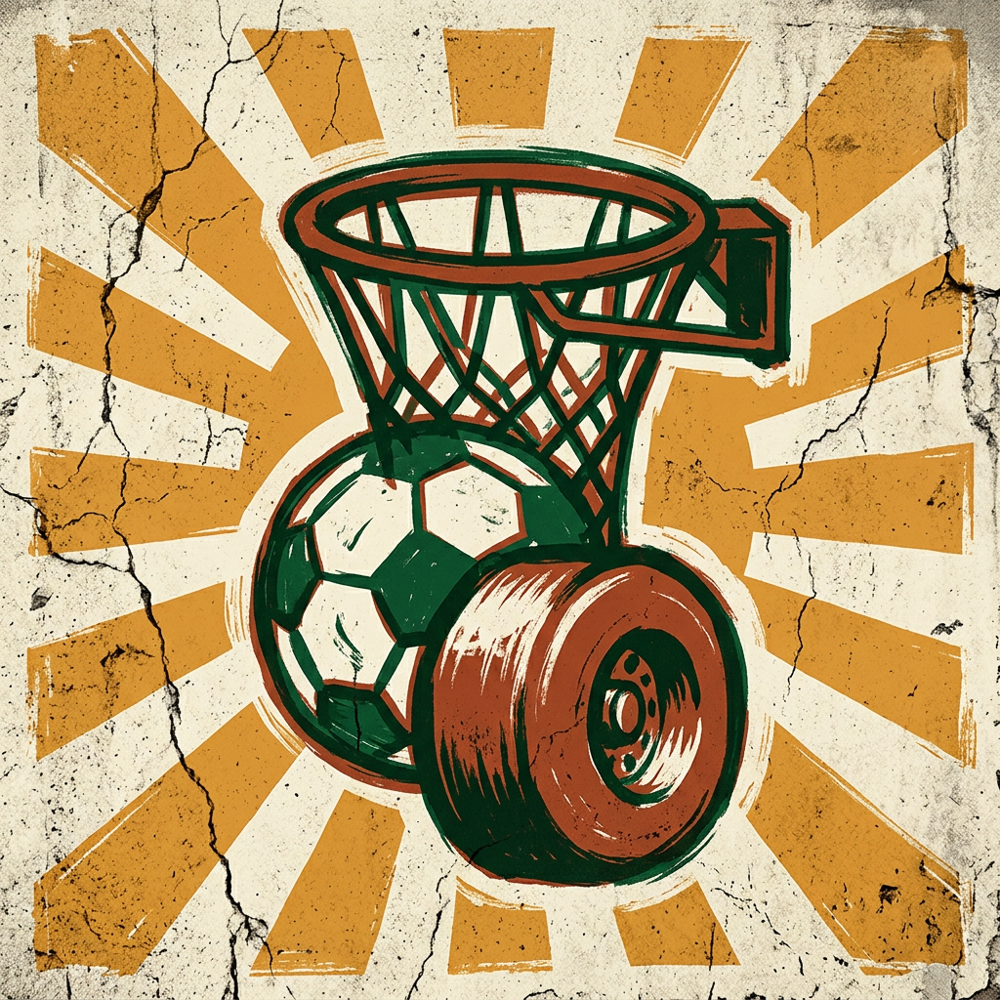

01
Cidade que se mexe adoece menos.
53,8% dos adultos brasileiros não atingem o mínimo de atividade física recomendada pela OMS. A barreira número 1, segundo o Vigitel, é “não ter onde”. Praças ativas resolvem isso sem co-pagamento.
Um manifesto editorial pelo direito de ocupar espaços públicos para a prática esportiva — porque ali se constrói saúde, vínculo e democracia urbana.
● Ocupação Esportiva é Política Pública
Quem desenha a cidade decide quem corre, quem joga e quem assiste. Reocupar a rua não é ruído — é projeto.
Existe uma cidade silenciosa por baixo da cidade que o concreto e o carro nos venderam: aquela em que a calçada vira gol, o muro vira tabela e o coreto, ringue. Essa cidade não é nostalgia — ela é infraestrutura. É política pública dormindo entre o asfalto e a árvore mais próxima. Sempre que se recolhe um equipamento esportivo de uma praça, retira-se também um direito constitucional.
O esporte está inscrito no Art. 6º da Constituição Federal como direito social, ao lado da saúde, da educação e do lazer. Isso significa que o Estado tem o dever de garantir não só a prática, mas o lugar da prática. Sem espaço público acessível, o direito se reduz a um cartaz de campanha.
A defesa das praças vivas é, antes de tudo, uma defesa epidemiológica. Cada quadra ativa em raio de 500 metros aumenta em 18% a chance de alguém praticar atividade física semanalmente. Cada coreto ocupado por uma roda de capoeira reduz a percepção de insegurança em torno. E cada parquinho em manutenção é uma criança a menos no pronto-socorro pediátrico por sedentarismo.
Ocupar não é tomar de assalto: é exercer. É devolver à rua a função que ela sempre teve — encontro, coletivo, jogo. Pleitar pista de skate em terreno baldio é tão legítimo quanto cobrar iluminação ou coleta de lixo. A política do esporte começa onde acaba a calçada do estádio fechado.
Este site é uma tentativa coletiva de fundamentar essa ocupação: com a Constituição na mão, dados de saúde pública embaixo do braço, e — sobretudo — a voz de quem vive a cidade jogando nela.
53,8% dos adultos brasileiros não atingem o mínimo de atividade física recomendada pela OMS. A barreira número 1, segundo o Vigitel, é “não ter onde”. Praças ativas resolvem isso sem co-pagamento.
Praças com programação esportiva semanal apresentam 27% menos ocorrências de crimes contra a pessoa em raio de 500 m (USP, 2024). A solução é gente, não muro.
A OMS estima retorno de quase 6× para cada real investido em espaço público para atividade física — em economia de saúde, produtividade e turismo de bairro. Quadra é PIB.
Antes da gente reativar a quadra do bairro, era só carro estacionado em cima do asfalto. Agora tem aula de futsal toda terça, vôlei adaptado na quinta, e os mais velhos ganharam um lugar pra caminhar sem ter medo. Não foi obra. Foi gente.
Grava um depoimento curto — um minuto basta. A gente transcreve com Google Speech-to-Text e publica na coluna de baixo, junto com os outros relatos da cidade.
O microfone do navegador grava localmente. Ao parar, o áudio é enviado para o conector google-speech-to-text e devolvido como texto. Nada é arquivado por padrão.
A gente não tinha onde levar as crianças. Hoje sai todo mundo às seis da tarde. A praça virou sala de estar.
Não dá mais pra esperar prefeitura. A gente pintou a quadra, arrumou a tabela, e o Marcelo trouxe a bola. Ali a gente é cidadão.
A escola tem quadra fechada no fim de semana. A praça é a única que sobra para a aula de educação física comunitária.
Pista de skate na laje do antigo posto. Construímos com madeira doada. Em três meses, 80 crianças andando.
Os quatro relatos acima são curados a partir de oficinas reais de escuta urbana. Os depoimentos novos aparecem no topo, marcados em terracota.

Conte o que existe e o que falta. Use uma planilha simples ou ferramentas abertas como o OpenStreetMap.
Não peça permissão para existir. Marque uma roda esportiva — futebol, dança, slackline, capoeira — e divulgue no grupo do bairro.
Sem evidência não há política. Registre frequência, faixa etária, modalidade — e use os depoimentos por voz desta página para compor o dossiê.
Com o dossiê pronto, leve à subprefeitura ou à Câmara Municipal um pedido de emenda impositiva, projeto de zeladoria participativa ou termo de cooperação.
Esta edição do manifesto é alimentada por dados abertos via
sports-skills
— uma coleção open-source de skills que embrulham fontes públicas
(ESPN, FPL, RSS, Polymarket, Kalshi). Quando uma cidade pública
dados esportivos, os depoimentos viram contexto: npx skills add machina-sports/sports-skills.
Volte amanhã. Traga a bola. Traga a vovó. Traga o microfone. A cidade é construída todo dia, e ela se constrói jogando.
● Assine com a sua voz